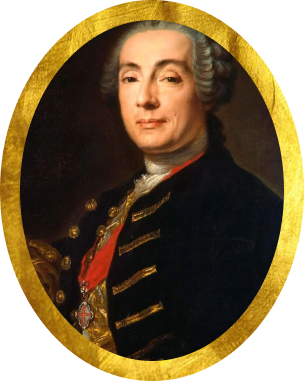
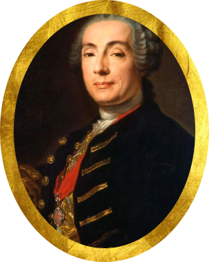

На главную
На главную
Первая половина XVIII в.
В скульптуре первой половины XVIII века господствовал стиль барокко. Крупнейшим мастером этого периода был Б. К. Растрелли. К числу его работ относятся бюсты Петра I и А. Д. Меншикова, портретная статуя в рост императрицы Анны Иоанновны с арапчонком. Петровское барокко (направление 1703–1730 годов). Для него свойственны простота объёмных построений, плоские фасады зданий, сочетание отдельных ордерных элементов, присущих классицизму, с барочными деталями, сдержанность декора и убранства. 1 Елизаветинское барокко (монументальное рококо). Для него характерны масштабы построек, пышность декоративного убранства, двух-трёхцветный окрас фасадов с применением золота, а также наличие элементов русских храмов (крестово-купольная схема, луковичные или грушевидные пятиглавия).
Главные деятели искусство
 

Доминико Андреа Трезини
Варфоломеей Варфоломееевич Растреелли
Бартоломео Карло Растрелли